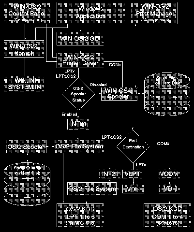

Detailed View of the WIN-OS/2 Data Connections
We apologize for the picture quality. The original was not available.
[Back: Migrating the Windows Initialization Files]
[Next: Low Level View of the WIN-OS/2 Printing Data Flow]